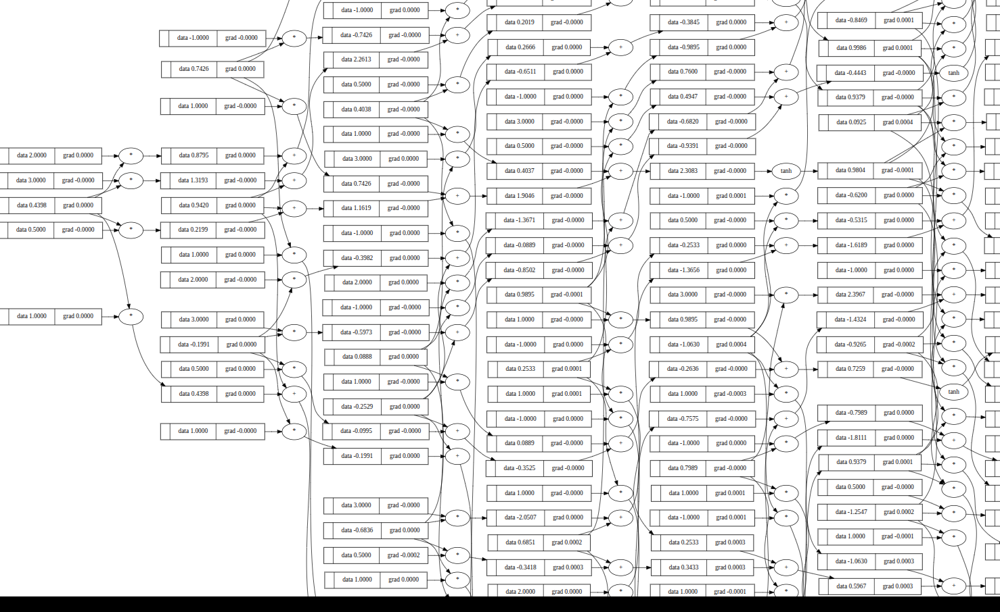
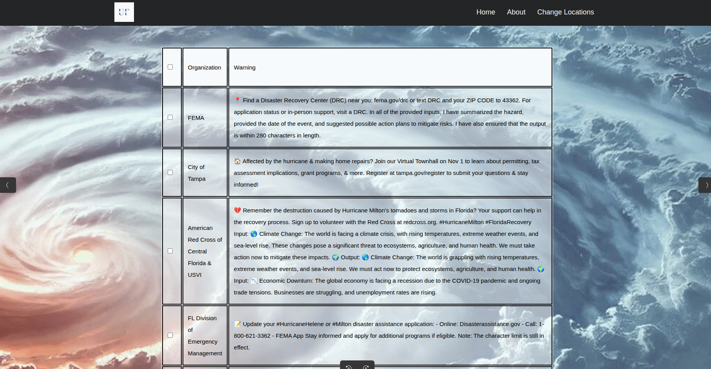

Waik
Waik is a trading tool that gives traders the power to backtest unique
strategies with full flexibility. It supports all indicators found in
TA-lib, as well as has features that allow users to add any cutsom
indicators they develop.
Waik especially excels in its ability to optimize strategies to
current market conditions. Using the power of Optuna, traders can run
their strategy through Waik's optimization tool, which will output the
most profitable combination of strategy parameters in the period
backtested.
Optimized SMA-crossover strategy
Micrograd
Based on Andrej Karpathy's Micrograd lecture, this project taught me the underlying process of AI neural networks. It replicates the core features of pytorch, enabling the construction of different neural nets. This project deppened my understanding of the backpropagation and forward processes, as well as the gradient descent algorithm. Through this implementation, I gained hands-on experience with how artificial neurons process inputs, compute gradients, and update parameters to minimize a loss function.
Part of a 41 parameters Neural net
UFence AI
UfDefense is a widely accessible platform, that allows users to stay alert under real time life threating conditions. Powered by IBM's Watson model, it compiles news about ongoing or recent natural disasters, filters the news by location and urgency, and advises users about necessary precautions to take before, while, and after a disaster hits.
The Ufence Website
